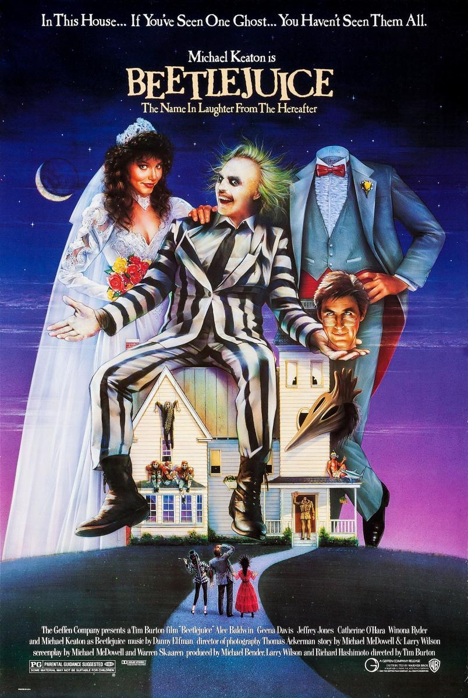

Beetlejuice 1988:
Beetlejuice es una comedia de terror que nos transporta a un mundo fantasmagórico lleno de humor negro y personajes excéntricos. La historia sigue a una pareja recién fallecida que se ve obligada a convivir con una familia muy peculiar en su antigua casa. Para deshacerse de los intrusos, recurren a Beetlejuice, un bio-exorcista extravagante y caótico que hará todo lo posible para ahuyentar a los vivos. Con un guion ingenioso, efectos visuales innovadores para su época y la dirección peculiar de Tim Burton, Beetlejuice es una experiencia única que combina lo macabro con lo cómico de una manera que sigue siendo cautivadora. Michael Keaton brilla como el irreverente Beetlejuice, mientras que Winona Ryder y Alec Baldwin aportan un toque de ternura a la historia.